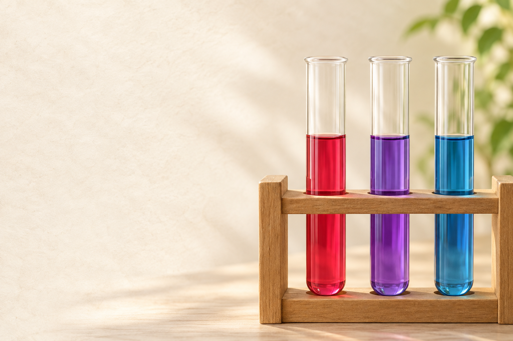
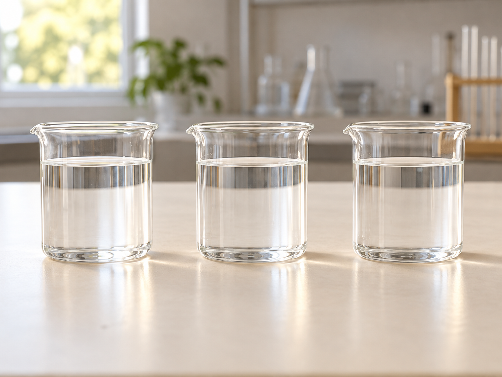
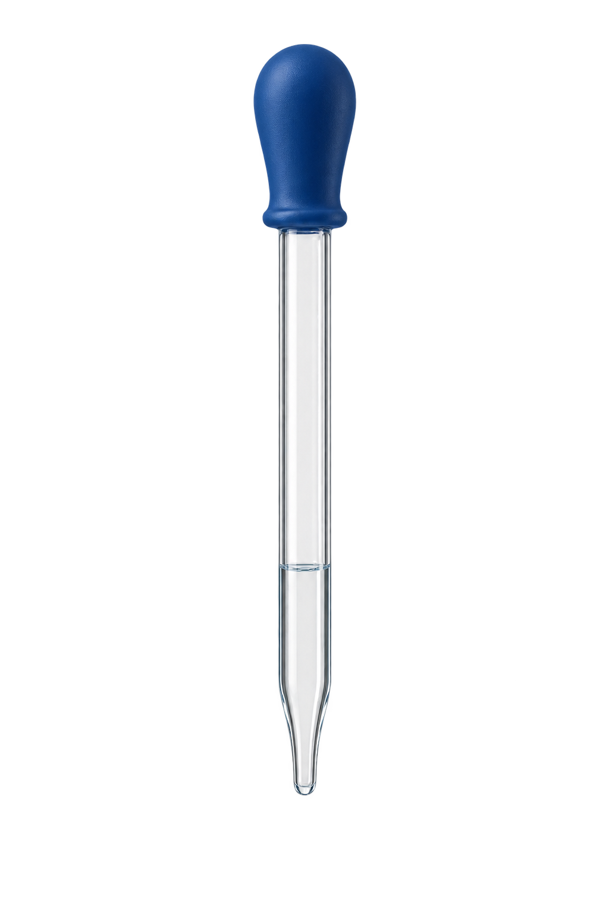

酸と
アルカリ
指示薬・pH・イオンをつなげよう。

見た目が同じでも、性質は同じ？

見た目だけで、酸性・中性・アルカリ性を判断できる？
3つとも 無色透明
酸性・中性・ アルカリ性
見た目だけでは 区別できない
無色透明でも、液の性質は違う。
指示薬を使い、色で調べよう。
酸っぱい・苦いは、身近な手がかり
酢・レモン汁
酸性アルカリ性の特徴の一つ
味だけで判定しない身近なものにも 液性がある
酢やレモン汁 酸っぱい・酸性
苦いだけでは アルカリ性と 決められない
酸性には、酸っぱいという特徴がある。
アルカリ性には苦味の特徴。 判定には指示薬を使う。
BTB溶液を加えると、何色になる？
酸性

中性
アルカリ性
各試料に同じ指示薬を少量加える。操作と発色を整理した模式アニメーション。
同じ指示薬を それぞれに加える
酸性で 黄色
中性で 緑色
アルカリ性で 青色
酸性の液に加えると、黄色。
中性の液に加えると、緑色。
アルカリ性の液に加えると、青色。
覚えること：BTBは、黄・緑・青
酸性
中性
アルカリ性
各試料に同じ指示薬を少量加える。操作と発色を整理した模式アニメーション。
酸性 → 中性 → アルカリ性
酸性は 黄
中性は 緑
アルカリ性は 青
酸性＝黄。
中性＝緑。
アルカリ性＝青。
フェノールフタレイン溶液なら？
酸性
中性
アルカリ性
各試料に同じ指示薬を少量加える。操作と発色を整理した模式アニメーション。
BTBと 同じ色になる？
酸性で 無色のまま
中性でも 無色のまま
アルカリ性で 赤色
酸性では、無色。
中性でも、無色。
アルカリ性で、赤色になる。
無色だったら、中性と決めてよい？
酸性
無色
中性
無色
フェノールフタレインが 無色だった
酸性でも 無色になる
酸性か中性かは これだけでは 決まらない
無色になるのは、中性だけではない。
BTBやリトマス紙で、さらに調べる。
青色リトマス紙をつけてみる
酸性
中性
アルカリ性
リトマス紙のぬれた部分に注目。試料ごとに新しい紙を使う。
元の色は 青色
酸性で 青 → 赤
中性では 青のまま
アルカリ性でも 青のまま
酸性では、つけた部分が赤くなる。
中性では、色が変わらない。
アルカリ性でも、青のまま。
赤色リトマス紙をつけてみる
酸性
中性
アルカリ性
リトマス紙のぬれた部分に注目。試料ごとに新しい紙を使う。
今度は 赤色の紙
酸性では 赤のまま
中性でも 赤のまま
アルカリ性で 赤 → 青
酸性では、赤のまま。
中性でも、色が変わらない。
アルカリ性では、青に変わる。
覚えること：リトマス紙の変化
元の色から 変わったかを見る
酸性は 青 → 赤
アルカリ性は 赤 → 青
中性では どちらも変わらない
酸性：青色紙が赤に変わる。
アルカリ性：赤色紙が青に変わる。
中性：赤も青も、そのまま。
3種類の指示薬を整理しよう
| 指示薬 | 酸性 | 中性 | アルカリ性 |
|---|---|---|---|
| BTB溶液 | 黄 | 緑 | 青 |
| フェノールフタレイン | 無色 | 無色 | 赤色 |
| 青色リトマス紙 | 青 → 赤 | 青のまま | 青のまま |
| 赤色リトマス紙 | 赤のまま | 赤のまま | 赤 → 青 |
BTB：黄・緑・青。
フェノールフタレイン： 無色・無色・赤。
リトマス紙： 青→赤、赤→青。
青い紙が赤くなった。どの液性？
青色リトマス紙 青 → 赤
酸性
BTB：黄色 フェノールフタレイン： 無色
青色紙が赤に変わるので、酸性。
ほかの指示薬の結果も予想できる。
赤い紙が赤いまま。何が分かる？
赤色リトマス紙 赤 → 赤
酸性か中性 まだ決まらない
BTBを加えると 黄なら酸性 緑なら中性
赤のままでも、酸性とは限らない。
別の指示薬で、区別しよう。
pHは、7を基準に読む
酸性・アルカリ性を 数値で表す
7より小さい 酸性
7 中性
7より大きい アルカリ性
pHが7より小さいと、酸性。
pHが7なら、中性。
pHが7より大きいと、アルカリ性。
pHが小さいほど、酸性が強い
pH 3 と pH 5 どちらも酸性
5より3の方が 酸性が強い
アルカリ性は pHが大きいほど強い
3は5より小さいので、酸性が強い。
pH12は10より、アルカリ性が強い。
確認：pHから液性を答えよう
pH 3・7・11 それぞれの液性は？
3：酸性
7：中性
11：アルカリ性
3は7より小さい。酸性。
7は基準。中性。
11は7より大きい。アルカリ性。
違う酸でも、どうして酸性になる？
塩酸 ＋ BTB
黄色
硫酸 ＋ BTB
黄色
塩酸も硫酸も BTBで黄色
物質は違っても 同じ性質を示す
水の中にある イオンを比べよう
塩酸も硫酸も、酸性を示す。
酸性に共通するものを探そう。
塩化水素を水に溶かすと？
塩化水素 HCl
水中で H⁺とCl⁻が生じる
HCl → H⁺ ＋ Cl⁻
HClから、H⁺とCl⁻が生じる。
塩化水素の水溶液を、塩酸という。
硫酸を水に溶かすと？
硫酸 H₂SO₄
H⁺が2個と SO₄²⁻が生じる
H₂SO₄ → 2H⁺ ＋ SO₄²⁻
硫酸からも、H⁺が生じる。
式では、H⁺が2個。
酸性に共通するイオンは、どれ？
2つの電離を 比べよう
どちらにも H⁺がある
酸性の性質を 示すもとは 水素イオン H⁺
塩酸にも硫酸にも、H⁺がある。
酸性の性質を示すもとは、H⁺。
水酸化ナトリウムを水に溶かすと？
水酸化ナトリウム NaOH
Na⁺とOH⁻が 離れて水中に広がる
NaOH → Na⁺ ＋ OH⁻
Na⁺とOH⁻に分かれる。
OH⁻は、水酸化物イオン。
水酸化バリウムでは、どうなる？
水酸化バリウム Ba(OH)₂
Ba²⁺ 1個に OH⁻ 2個
Ba(OH)₂ → Ba²⁺ ＋ 2OH⁻
こちらからも、OH⁻が生じる。
OH⁻は、Ba²⁺1個に2個。
アルカリ性に共通するイオンは？
2つの電離を 比べよう
どちらにも OH⁻がある
アルカリ性の 性質を示すもとは OH⁻
共通しているのは、OH⁻。
アルカリ性のもとは、水酸化物イオン。
H⁺とOH⁻は、どちらが多い？
水溶液には 両方のイオンがある
H⁺の方が多い 酸性
同じだけ 中性
OH⁻の方が多い アルカリ性
H⁺の方が多いと、酸性。
H⁺とOH⁻が同じなら、中性。
OH⁻の方が多いと、アルカリ性。
覚えること：酸とアルカリ
水に溶けて 何を生じるか
酸：H⁺を生じる 酸性のもとはH⁺
アルカリ：OH⁻を生じる アルカリ性のもとはOH⁻
酸は、水中でH⁺を生じる。
アルカリは、水中でOH⁻を生じる。
色・pH・イオンをつないで答える
| 試料 | BTBの色 | pH |
|---|---|---|
| A | 黄 | 3 |
| B | 緑 | 7 |
| C | 青 | 11 |
A・B・Cの 液性を考える
A：酸性 H⁺の方が多い
B：中性 両方が同じ
C：アルカリ性 OH⁻の方が多い
AはBTBが黄、pH3。酸性。
BはBTBが緑、pH7。中性。
CはBTBが青、pH11。アルカリ性。
まとめ：色・pH・共通するイオン
3つを結び付けて 説明しよう
指示薬の色で 液性を調べる
pHは 7を基準に読む
酸性のもとはH⁺ アルカリ性のもとはOH⁻
指示薬は、 種類ごとの色を覚える。
pH7より小＝酸性。 7＝中性、大＝アルカリ性。
酸性はH⁺、 アルカリ性はOH⁻。